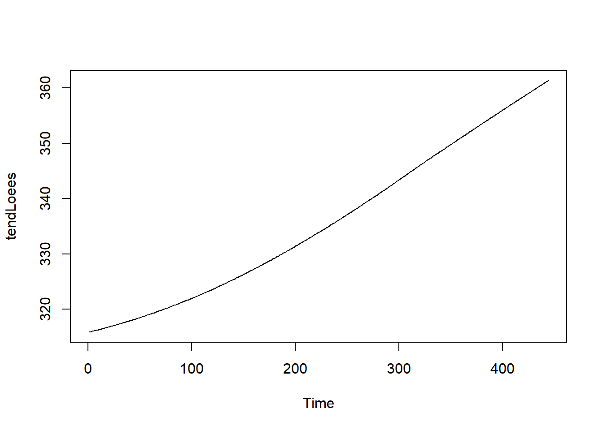
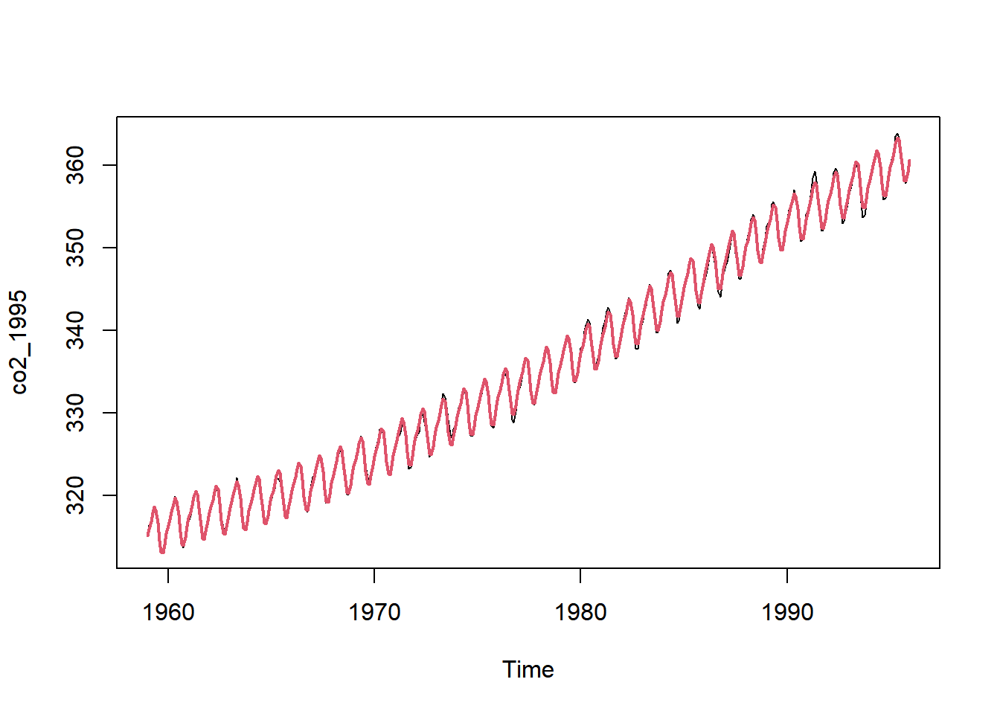

ts.plot(co2)
Seja \(\mathcal{D}_t=\{y_1,\ldots,y_t\}\) a série temporal observada. Portanto, para qualquer \(h>0\), o valor \(y_{t+h}\) é desconhecido. Inferências pontuais sobre esse valor são denominadas previsões, sendo denotadas por \(\hat{y}_t(h)\), onde o valor de \(h\) é denominado horizonte (de previsão).
Considere que a série temporal \(y_t\) pode ser escrita como um modelo linear. Então, pelo princípio da substituição, o valor ajustado \(\hat{y}_{t+h}=\boldsymbol{f}_{t+h}'\hat{\boldsymbol{\beta}}\) é um estimador para \(y_{t+h}\) e, portanto, \(\hat{y}_t(h)=\hat{y}_{t+h}\) uma previsão para o valor da série no horizonte \(h\).
Como \(\hat{\boldsymbol{\beta}}\sim N(\boldsymbol{\beta},(\boldsymbol{F}_n\boldsymbol{F}_n')^{-1}\nu)\), teremos que \[\hat{y}_{t+h}\sim N(\boldsymbol{f}_{t+h}'\boldsymbol{\beta},\nu\boldsymbol{f}_{t+h}'(\boldsymbol{F}_n\boldsymbol{F}_n')^{-1}\boldsymbol{f}_{t+h})\] Como \[\frac{\hat{y}_{t+h}-\boldsymbol{f}_{t+h}'\boldsymbol{\beta}}{\sqrt{\nu\boldsymbol{f}_{t+h}'(\boldsymbol{F}_n\boldsymbol{F}_n')^{-1}\boldsymbol{f}_{t+h}}}\sim N(0,1)\] Um intervalo aproximado, de previsão \(\gamma100\%\), pode ser dado por \[\left(\boldsymbol{f}_{t+h}'\hat{\boldsymbol{\beta}}+z_{\frac{1-\gamma}{2}}\sqrt{\hat{\nu}\boldsymbol{f}_{t+h}'(\boldsymbol{F}_n\boldsymbol{F}_n')^{-1}\boldsymbol{f}_{t+h}},\boldsymbol{f}_{t+h}'\hat{\boldsymbol{\beta}}+z_{\frac{1+\gamma}{2}}\sqrt{\hat{\nu}\boldsymbol{f}_{t+h}'(\boldsymbol{F}_n\boldsymbol{F}_n')^{-1}\boldsymbol{f}_{t+h}}\right)\] Em geral, utiliza-se \(\gamma\) igual a 0,8 ou 0,9.
co2A série co2 apresenta a média de concentração de carbono, em partes por milhão, em Mauna Loa.
ts.plot(co2)
É possível observar uma tendência crescente e um padrão sazonal. A série vai até 1997. Vamos remover os anos de 1996 e 1997 para utilizá-los na previsão.
co2_1995 <- window( co2, end = c(1995,12))Vamos primeiramente eliminar a tendência, utilizando o loees, para estudar o padrão sazonal. Abaixo, mostramos a tendência estimada.
require(TSA) Carregando pacotes exigidos: TSAWarning: package 'TSA' was built under R version 4.3.2
Attaching package: 'TSA'The following objects are masked from 'package:stats':
acf, arimaThe following object is masked from 'package:utils':
tarrequire(forecast)Carregando pacotes exigidos: forecastWarning: package 'forecast' was built under R version 4.3.1Registered S3 method overwritten by 'quantmod':
method from
as.zoo.data.frame zoo Registered S3 methods overwritten by 'forecast':
method from
fitted.Arima TSA
plot.Arima TSA tempo <- 1:length(co2_1995)
lw <- loess( co2_1995 ~ tempo)
tendLoees <- lw$fitted
ts.plot(tendLoees)
semTend <- co2_1995 - tendLoees
ts.plot(semTend)
lines( ma(semTend, 12))
monthplot(semTend)O sinal sazonal tem um efeito de \(\pm 4\) somados à tendência. O primeiro gráfico acima mostra a série subtraída da estimativa via loees, junto com uma média móvel de ordem 12, que oscila em torno de zero, o que são indícios de que a tendência foi removida. O gráfico de subséries apresenta comportamento estacionário para alguns meses. Outro parecem ter uma tendência, como abril, por exemplo. Contudo, o valor desse efeito é baixo se comparado com a tendência geral, o que nos permite assumir uma funçao periódica para a sazonalidade.
Abaixo apresentamos o periodograma. A frequência fundamental representa um período de 12 meses e a segunda frequência relevante mostra a necessidade do harmônico de ordem 2.
per <- periodogram(semTend)tail( 1/per$freq[ order(per$spec)] , 3)[1] 6.00000 12.16216 11.84211Agora, vamos considerar apenas a tendência estimada, procurando por um polinômio de ordem adequada.
aic <- NULL
for(i in 1:15){
mod <- lm( tendLoees ~ poly( tempo, i ,raw = T))
aic[i] <- AIC(mod)
}
ts.plot(aic, type = 'o')Vamos construir o modelo final. Para poder utilizar esse modelo para fazer previsões, precisamos construir a matriz de regressão, utilizando o comando model,frame, antes de construir o objeto lm. Essa matriz foi denominada por X abaixo.
ordemP <- 7
X <- model.matrix(~poly(tempo, ordemP, raw = T)+ harmonic(co2_1995, 2))
modFinal <- lm( co2_1995 ~ X)
ts.plot(co2_1995)
lines(ts(modFinal$fitted.values, start = start(co2), frequency = frequency(co2)), lwd = 2, col =2)
Abaixo, criamos a matriz de regressão com com os tempos correspondentes aos anos de 1996 e 1997. Note que vamos utilizar o nome X novamente.
# criando a matriz para previsão
n <- length(tempo)
tempoPrev <- (tempo[n]+1):(tempo[n]+24)
tempoPrev <- ts(tempoPrev, frequency = 12)
X <- model.matrix( ~ poly( tempoPrev,ordemP, raw = T) + harmonic(tempoPrev,2))Agora, vamos utilizar a função predict e conjunto coma matriz criada anteriormente, para obter os valores previstos. Também vamos obter o intervalo de previsão de 95%.
pred <- predict(modFinal, data.frame(X), interval = 'prediction', level = .95)
pred <- ts(pred, start = c(1996,1), frequency = 12)
head(pred) fit lwr upr
Jan 1996 361.6882 360.7432 362.6331
Feb 1996 362.5388 361.5834 363.4943
Mar 1996 363.5099 362.5435 364.4763
Apr 1996 364.6676 363.6897 365.6456
May 1996 365.4696 364.4787 366.4605
Jun 1996 365.1953 364.1894 366.2011Abaixo, mostramos os valores previstos e os observados.
ts.plot(co2, xlim = c(1994,1998), ylim = c(350,370))
lines(pred[,1], lwd =2, col =2)
Abaixo, o mesmo gráfico mas com intervalo de previsão de 90%.
require(scales)Carregando pacotes exigidos: scalests.plot(co2, xlim = c(1994,1998), ylim = c(350,370), type = 'p')
polygon( 1996+c(0:23,23:0)/12, c(pred[,2],pred[24:1,3]), col = alpha('lightpink',.3), border = 'lightpink')
lines(pred[,1], lwd =2, col =2)Note que o modelo conseguiu prever o ano de 1996 de modo satisfatório e os cinco primeiros meses de 1997. Este modelo parece ser adequado para previsões com o horizonte de doze meses.
Vale ressaltar que este modelo não satisfaz a hipótese de ruído branco. Os gráficos dos resíduos revelam ainda características típicas de séries estacionárias.
res <- rstudent(modFinal)
ts.plot(res)acf(res)shapiro.test(res)
Shapiro-Wilk normality test
data: res
W = 0.99684, p-value = 0.5439Box.test( res, type = 'Ljung-Box')
Box-Ljung test
data: res
X-squared = 233.31, df = 1, p-value < 2.2e-16Considere que o objetivo principal da análise é a previsão. Um modelo pode falhar em alguma suposição, como normalidade dos erros, mas ainda sim produzir boas previsões. Por isso, é importante conseguir medir o quão bom é o modelo, o que implica estudar a diferença entre o previsto e o realizado. Vamos definir o erro de previsão por
\[u_{t} =\hat{y}_{t-1}(1)-y_{t}\]
Fixamos um valor \(J\) para separar as últimas \(J\) observações \[y_{t-J+1},\ldots,y_{t},\] e, partir destas observações, calculamos a performance de previsão segundo alguma métrica a ser minimizada. As métricas mais comuns são:
O MASE tem uma interpretação muito interessante: se \(MASE>100\%\), então o modelo é pior do que simplesmente fazer \[y_{t-1}(1)=y_{t-1},\] ou seja, prever \(y_t\) como sendo igual a \(y_{t-1}\). Isto é considerado um “modelo ingênuo” (naïve model), sendo considerado o modelo de previsão mais básico.